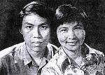

Vâng, ngày Tình yêu hãy nói về tình yêu. Thiết tưởng trong thi ca hiện đại khó có bài thơ nào, ca khúc nào chuyển tải được sự tha thiết, nồng nàn và cả hương vị của tình yêu bằng các ca khúc Thuyền và biển và Thư tình cuối mùa thu (thơ Xuân Quỳnh, Phan Huỳnh Điểu phổ nhạc). Đó là một sự giao cảm và kết hợp tuyệt vời giữa một người được coi là nhà thơ của tình yêu, còn người kia là nhạc sĩ của tình yêu.
Nhân ngày Tình yêu, xin gửi những người đang yêu câu thơ bất hủ: "Chỉ còn anh và em cùng tình yêu ở lại".
Xuân Quỳnh tài hoa và xinh đẹp. Người con gái mồ côi mẹ, sống với bà nội quê ở xã La Khê, huyện Hoài Đức (Hà Tây) ấy mới 13 tuổi (năm 1955) đã được tuyển vào Đoàn Văn công trung ương và trở thành diễn viên múa chuyên nghiệp, từng đi biểu diễn ở nước ngoài và dự Đại hội Thanh niên sinh viên thế giới năm 1959 tại Vienne (Áo)... Nhưng Xuân Quỳnh không tự thỏa mãn với nghề múa, trong tâm thức chị luôn thôi thúc được viết, được trang trải những suy nghĩ dồn nén của mình ra trang giấy.
Tốt nghiệp Trường Bồi dưỡng viết văn khóa I (1962-1963), từ đó cho đến lúc qua đời Xuân Quỳnh gắn chặt với nghiệp cầm bút... Phàm người tài hoa thường đa cảm, truân chuyên: cuộc hôn nhân lần đầu tiên với một nghệ sĩ violon gãy đổ sau khi họ chuyển về khu nhà 96 Phố Huế (Hà Nội) - "cư xá" dành riêng cho văn nghệ sĩ. Chính ở đó Xuân Quỳnh đã gặp Lưu Quang Vũ - một cuộc gặp gỡ định mệnh! Vũ nhỏ hơn Quỳnh 6 tuổi (1948), trước khi yêu Quỳnh đã lập gia đình với diễn viên điện ảnh T.U! Cuộc tình này đã cho Lưu Quang Vũ "biết thế nào là... đau khổ" và cả sự đắng cay, chua chát dù lúc này anh đã có chút tiếng tăm trong làng thơ. Chính lúc ấy hai hồn thơ "láng giềng" cô đơn và đau khổ đã tìm đến nhau, vực nhau dậy và dìu nhau đi. Nói đúng hơn thì chính định mệnh đã đưa Xuân Quỳnh đến với Lưu Quang Vũ để thắp lên trong anh ngọn lửa ấm tin yêu, giúp anh vượt qua giai đoạn suy sụp tinh thần để từ đó tài năng của anh như được chắp thêm đôi cánh trong lĩnh vực nghệ thuật. Chính tình yêu của Xuân Quỳnh góp phần quan trọng nhất giúp Lưu Quang Vũ sau này trở thành một kịch tác gia sung sức và uy tín nhất trong thập niên 80.
Kể từ lúc chung sống với nhau cho đến ngày cùng chết bên nhau (tử nạn trong tai nạn giao thông cùng con trai út Lưu Quỳnh Thơ ngày 29/8/1988 tại cầu Phú Lương, thị xã Hải Dương) cả hai đều sáng tác rất sung sức, đặc biệt là Xuân Quỳnh với những bài thơ tình nổi tiếng: Sân ga chiều em đi, Tự hát, Thuyền và biển, Thư tình cuối mùa thu... Nhà thơ Nguyễn Duy đã từng viết: "Xuân Quỳnh - Lưu Quang Vũ, hai gương mặt tiêu biểu nhất, một đối thoại tình yêu đẹp nhất của thế hệ chúng tôi. Những bài thơ ấy không chỉ là tiếng nói riêng của hai người mà đã trở thành tiếng nói chung của bao đôi lứa yêu nhau".
Thơ tình Xuân Quỳnh rất hay. Điều đó ai cũng thừa nhận, nhưng bài thơ còn hay hơn nữa khi được nâng lên bởi người nhạc sĩ tài hoa Phan Huỳnh Điểu. Những người yêu nhau ai mà chẳng từng hát Thuyền và biển, Thư tình cuối mùa thu... Nhất là bài Thư tình... với giai điệu trữ tình, đằm thắm cung sol thứ. Tình yêu đã vượt qua mùa bão gió, qua ngàn cơn thác lũ, để bây giờ "chỉ còn anh và em cùng tình yêu ở lại" - lời tự tình được nhắc đi nhắc lại nhưng vẫn nghe có chút gì buồn thương, hoài cảm... Chúng tôi đã có cuộc trao đổi với nhạc sĩ Phan Huỳnh Điểu chung quanh các tình khúc này.
- Ông là người viết rất thành công những ca khúc phổ thơ. Do đâu ông sở đắc với loại hình này? Và cảm nhận của ông riêng với thơ Xuân Quỳnh?
- Nhạc sĩ Phan Huỳnh Điểu: Phải nói thật là rất ít nhạc sĩ sáng tác có khả năng sử dụng ngôn ngữ (ca từ) phong phú bằng các nhà thơ. Tôi lười... chọn chữ, cho nên rất hay đọc thơ và hễ bắt gặp bài thơ nào hay, hợp với tình cảm, tâm trạng thì phổ. Cũng một câu nói "Em yêu anh" thốt ra từ miệng một cô gái bình thường nghe đã... xao xuyến rồi, nếu như câu nói ấy lại được thốt ra với... âm điệu trầm bổng đầy nhạc tính, dĩ nhiên nghe "phê" hơn! Thơ Xuân Quỳnh vừa trẻ trung vừa sâu sắc. Đã hay về lời văn lại hay cả về tình cảm và âm điệu. Thí dụ câu Chỉ có thuyền mới hiểu... đọc không thôi mà nghe rất hay.
- Hẳn ông là người rất hiểu Xuân Quỳnh?
- Không chỉ hiểu mà tôi còn biết rất rõ về Xuân Quỳnh bởi chúng tôi cùng ở khu nhà tập thể 96 Phố Huế. Căn hộ của tôi sát cạnh hộ nhà thơ Lưu Quang Thuận (bố Lưu Quang Vũ), càng thân bởi đồng hương Đà Nẵng. Tôi cũng có quen với anh nghệ sĩ violon - chồng trước của Xuân Quỳnh. Khi Quỳnh về sống với Vũ, nhà tôi và nhà ông Thuận cùng nhường cho đôi vợ chồng mới này 2 cái... phòng tắm sát vách, họ đập bỏ bức vách để có "căn hộ... 4 mét vuông", chật chội là thế nhưng họ đã sống bên nhau cho đến lúc không còn hiện diện trên cõi đời này.
- Nhiều người gọi ông là "nhạc sĩ của tình yêu", nhân ngày Tình yêu ông có thể tiết lộ điều gì đã tạo nên phong cách đó?
- Danh hiệu "nhạc sĩ của tình yêu" là do nhạc sĩ Nguyễn Xuân Khoát đã ưu ái đặt cho. Mà ngẫm cũng... đúng thiệt, bởi từ tác phẩm đầu tay Trầu cau tôi đã hướng vào đề tài tình yêu và gắn bó với đề tài này xuyên suốt cho đến tận bây giờ. Nhân ngày Tình yêu, tôi chúc các bạn trẻ - những người đang yêu nhau càng yêu nhau... quên trời đất, để "chỉ còn anh và em cùng tình yêu ở lại".
(Theo Thanh Niên)